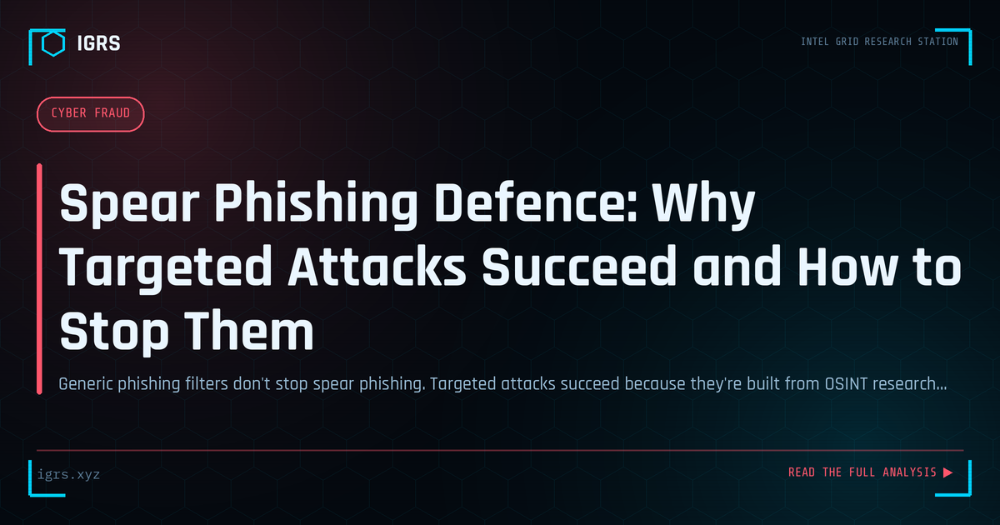

Spear Phishing Defence: Why Targeted Attacks Succeed and How to Stop Them
| File No. | IGRS-045/2026 |
| Subject | Detection and defence methodology for targeted spear phishing attacks against Indian organizations |
| Category | Cyber Awareness |
| Author | Manuj Kumar Pandey |
| Published | 2026-04-21 |
| Reading time | 6 minutes |
Generic phishing filters don't stop spear phishing. Targeted attacks succeed because they're built from OSINT research. Understanding how they're constructed is the key to defeating them.
Spear phishing versus phishing
Phishing is mass targeting — the same message sent to thousands, relying on a small percentage falling for a generic lure. Spear phishing is precision targeting — a message crafted specifically for one individual using personal and professional information gathered through OSINT research. It appears indistinguishable from legitimate communication, because it references things the target is actually working on.
How attackers research their targets
A spear phishing campaign begins with OSINT collection. LinkedIn reveals the target's role, reporting structure, current projects, and colleagues' names. Company websites reveal email format. Press releases reveal partners, clients, and business activities. Social media reveals personal interests and communication style. Job postings reveal which internal software the company uses — a pretext referencing a specific tool (Jira, Workday, Salesforce) immediately increases plausibility.
Common pretexts against Indian organizations
Highest-volume patterns targeting Indian businesses and government: IT helpdesk credential reset requests referencing real internal systems; finance department vendor payment update requests timed to actual procurement cycles; senior executive impersonation requesting urgent wire transfers or data; HR benefit and payroll update notifications. Each is designed to be processed quickly without verification — the combination of familiarity, authority, and urgency defeats careful thinking.
Technical controls that help
DMARC enforcement at reject policy prevents domain spoofing. External email banners on messages from outside the organization train users to pause before acting on messages claiming to be from internal senders. Advanced email filtering with attachment sandboxing and URL analysis catches known-malicious content. But technical controls alone are insufficient against well-crafted attacks using legitimate services.